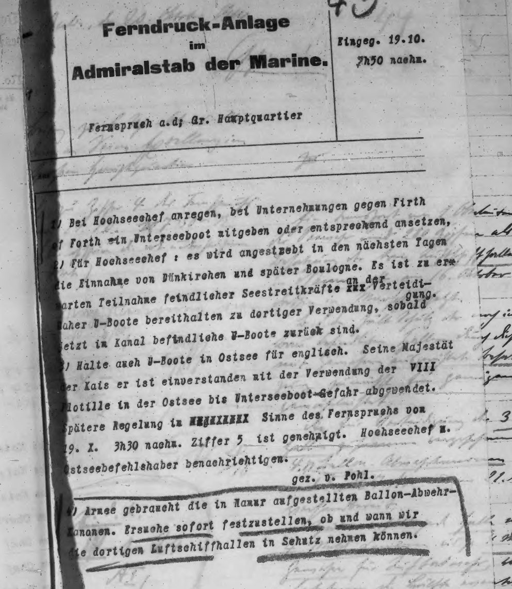

At a glanceKey from adjacent plaintext · complete
- The telegram
- Great Headquarters to the Admiralty Staff on 19 October 1914.
- Where
- U.S. National Archives, RG 242, T1022 roll 1061, frame 35. The WWI Cipher Repository lists it as undeciphered.
- The cipher
- Five-digit Verkehrsbuch groups with Schieber I substitution on digits two through four.
- What it says
- Great Headquarters discusses submarine support in the Firth of Forth and off Dunkirk and Boulogne, the VIII Flotilla’s temporary Baltic assignment, and protection of the airship hangars at Namur.
- Still open
- Two intended groups in paragraph 2, several faded digits, and the first digit of the group for Abwehr.
- Credit
- The German Admiralty Staff preserved the contemporary decipherment.
01 The telegram
The handwritten telegram is filed with correspondence on mines and minelaying. The nearby forwarding draft, K.Z. 2219, restates the first paragraph. The High Seas Fleet's war diary reproduces the first two paragraphs as forwarded, with some differences in phrasing. [Forwarding draft] [Fleet war diary]
02 The cipher key
The draft names a submarine where the ciphertext has 67683. Its published VB value, 65873, fixes the three slider positions at 376. The same setting gives 65775 for Unternehmung. In all, 26 of the 43 group occurrences give VB numbers with readings attested in other telegrams, counting repeats. [Schieber I strips] [Published submarine group]
03 Contemporary copy

The aviation file preserves all four paragraphs. A separate Great Headquarters copy confirms the Kaiser’s assent in paragraph 3, and the typewritten copy supplies the VIII Flotilla ordinal. The fourth paragraph asks when the airship hangars at Namur can be protected. [Full contemporary copy] [Separate Baltic order]
04 Doubtful digits
The key replay uses the observed digits and independently attested VB entries. Of the 27 group occurrences it can look up, 22 match the aligned text exactly and five differ in marked wording or inflection. The period copies supply the readings at the other 16 positions.
The worksheet distinguishes the published digits from the values tested. The paragraph 4 group that appears as 02942 gives an out-of-range code. The conjectural 22942 gives attested Abwehr, confirmed in the typewritten compound. The group numbers beside Verteidigung and bereithalten remain uncertain even though the words are clear in both period readings.
Full texts
The transcription and the decryption of every document on this page, so that the reading can be used and checked. Short files are shown here; all are in the repository.
kz2208 (NARA RG 242, T1022 roll 1061, frame 35, 19 October 1914)
Great Headquarters discusses submarine support in the Firth of Forth and off Dunkirk and Boulogne, the VIII Flotilla’s temporary Baltic assignment, and protection of the airship hangars at Namur.
Transcription
1. Bei 37013 anregen bei 67485 gegen 14459 39887 67683 58630 oder entsprechend 26988. 2. Für 37013. Es wird 26438 in den nächsten Tagen die 39623 von 1?677 und später 18314. Es 36870 61024 4?532 63428 an 69485. Daher 67683 39306 zur 30657 69991, sobald jetzt im 4?6?3 38827 67683 73577 sind. 3. Halte auch 67683 in 16983 für 14???. 55175 69991 der 45736 in 16983 bis 67683 48773. Spätere Regelung im Sinne des Fernspruchs vom 19. X. 3h30 nachmittags Ziffer 5 ist genehmigt. Hochseechef und Ostseebefehlshaber benachrichtigen. gez. v. Pohl. 4. 33787 45231 die in Namur 33476 35409 02942 40275. Ersuche sofort festzustellen, ob und wann wir die dortigen 55515 44590 63596 können.
Decryption
1. Bei Hochseechef anregen, bei Unternehmungen gegen Firth of Forth ein Unterseeboot mitgeben oder entsprechend ansetzen. 2. Für Hochseechef. Es wird angestrebt in den nächsten Tagen die Einnahme von Dünkirchen und später Boulogne. Es ist zu erwarten Teilnahme feindlicher Seestreitkräfte an der Verteidigung. Daher U-Boote bereithalten zu dortiger Verwendung, sobald jetzt im Kanal befindliche U-Boote zurück sind. 3. Halte auch U-Boote in Ostsee für englisch. Seine Majestät der Kaiser ist einverstanden mit der Verwendung der VIII. Flottille in der Ostsee, bis Unterseeboot-Gefahr abgewendet. Spätere Regelung im Sinne des Fernspruchs vom 19. X., 3h30 nachm., Ziffer 5, ist genehmigt. Hochseechef und Ostseebefehlshaber benachrichtigen. Gez. v. Pohl. 4. Armee gebraucht die in Namur aufgestellten Ballon-Abwehrkanonen. Ersuche sofort festzustellen, ob und wann wir die dortigen Luftschiffhallen in Schutz nehmen können.
Translation
1. Suggest to the commander of the High Seas Fleet that a submarine accompany operations against the Firth of Forth or be deployed in support. 2. For the commander of the High Seas Fleet. The aim is to capture Dunkirk in the next few days and Boulogne later. Enemy naval forces are expected to take part in the defense. Keep submarines ready for use there as soon as the submarines currently in the English Channel return. 3. I also believe the submarines in the Baltic are British. His Majesty the Kaiser agrees to the use of the VIII Flotilla in the Baltic until the submarine threat has passed. The later arrangements under point 5 of the telephone message of 19 October at 3:30 p.m. are approved. Notify the commander of the High Seas Fleet and the Baltic commander. Signed, von Pohl. 4. The Army needs the anti-balloon guns stationed at Namur. Please establish immediately whether and when we can protect the airship hangars there.
Key: deslide.py
05 Sources
- WWI Cipher Repository message and published transcription
- NARA T1022 roll 1061, frame 35, handwritten ciphertext
- NARA T1022 roll 1056, frame 800, contemporary decipherment
The transcription, English translation, group worksheet and slider script are in the repository folder.
Cite this page
Daniel Bourdeau, “Admiralty Staff telegram K.Z. 2208, 19 October 1914”, Cyphersolver, posted 22 November 2026, repository commit cec2f70fc9, https://cyphersolver.com/kz2208.html.